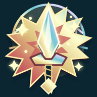

Define the tiny-screen job
Identify where the mark appears: browser tabs, bookmarks, pinned icons, and app launchers. Set the smallest target first. At sixteen pixels, one memorable shape matters more than a miniature illustration.
A small beacon for a big idea
A favicon has one job before anything else: be recognized in a crowded tab at sixteen pixels. The current mark builds outward from a prismatic sword and radiant starburst on a deep-teal tile. This process preserves that distinctive silhouette, then tests which details truly survive at small sizes.
Current vector favicon · 64 × 64 viewBox
Begin with the story, reduce it to a strong silhouette, and let every added detail prove it can work at tab size.
Identify where the mark appears: browser tabs, bookmarks, pinned icons, and app launchers. Set the smallest target first. At sixteen pixels, one memorable shape matters more than a miniature illustration.
Keep the upright, prismatic sword as the central sign for the Word. Let the radiant starburst suggest discovery, hope, and power. Treat the sword as a scriptural emblem: firm and protective, never threatening.
Draw the dark rounded tile, the broad star rays, and the centered blade as simple filled shapes. Check the outline in one color before adding inner facets, stars, or metallic trim. The silhouette must remain recognizable alone.
Use deep teal (#0C2631) to anchor the tile. Use warm ivory and brass (#FFFECF, #DFC681) for light and craft; prismatic blue, rose, and lavender bring artistry and joy. Protect the blade’s contrast against the star.
Keep the main blade and star readable at every size. At 32–64 pixels, add the inner facets and guard. At larger app-icon sizes, let the small sparkles, bevels, and jewel detail reward closer viewing.
Preview at 16, 32, 64, and app-icon sizes on light and dark browser chrome. Check edge padding, contrast, and whether thin outlines merge. Compare the favicon beside other tabs, not only on a design canvas.
Keep a clean SVG viewBox, verify that filters and gradients render consistently, and confirm the favicon, Apple touch icon, and PWA icons are intentionally related. Check the files in their actual browser and device slots before release.

192 px · PWA iconThese qualities shape the mark’s behavior. They are not separate ornaments; the favicon expresses them through silhouette, light, color, proportion, and restraint.
A lovely large icon is not automatically a good favicon. The final review favors honest recognition over detail for detail’s sake.
At tab size, the tile, radiant silhouette, and central blade form one clear sign; fine decoration remains secondary.
Bright edges separate the symbol from its deep field without glare. The icon remains distinct on both light and dark browser chrome.
God-fearing means respect for the sacred purpose, not fear-based imagery. Power is conveyed as light and steadfastness, not aggression.
SVG, Apple touch, and PWA assets share one recognizable silhouette, with deliberate simplification wherever their pixel budgets differ.
Gradients and filters enhance the jewel-like finish but do not carry recognition. A flat-color fallback must still work.
The favicon is still and calm. No flashing or motion is needed; playfulness lives in the color, not in distraction.
The finished favicon should feel like a small, steady light in a crowded row of tabs: regal enough to be remembered, gentle enough to welcome, and clear enough to recognize in a glance.